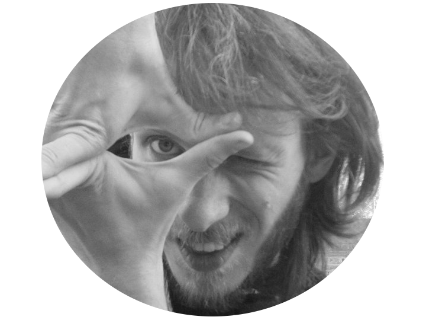
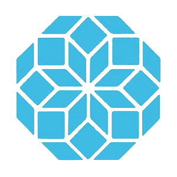

This is Pablo Zivic's WOW

Tip: use the arrows
Hi! Let me introduce myself.
I'm Pablo, I'm 28 years old, and I am a data scientist / coder / neuro-something. I am also some sort of a juggler, it clears up my mind. Besides my juggling hobbie, I used to be a handstand practitioner. I don't do that now, but I often think of starting training again.
Two other things that you should know about me are that I'm a percussion enthusiast: I'm always playing rhythms in my mind... and sometimes those rhythms happen to get out of it :). The second and last thing is that I'm a zombie expert, well, maybe not an expert, but I love zombie's culture.
Regarding my WOW,
when I started to think about it, I had two things in my mind.
I wanted it to be a mixture between what I am
and what I think Sandbox is.
So... What am I?
to talk with interesting people,
and I believe that Sandbox is the place for those things to happen
About my WOW
I want to represent Sandbox
as something that emerges from the interaction of many small parts
but that also has an identity of its own.
Let's consider Sandbox logo as a seed

I realized that it can be described mathematically in a very synthetic way
Axiom: X
Rule: X = -----F++F[-F]++F++F---F-F++X
This seed can now grow into a tree ...
... or into more complex shapes ...
Each seed gives rise
to a different plant
So I wondered what grows from the Sandbox's seed,
and I got to the following...
This is the Sandbox mandala, an infinite composition of the logo
representing both all sandboxers building something bigger
and keeping the identity of the network
I hope you enjoyed my application as much as I enjoyed preparing it.
But above all, I hope that I have managed to transmit in this webpage
my desire be part of this incredible network
and continuing learning, meeting people, discovering things, teaching and more importantly
creating something new